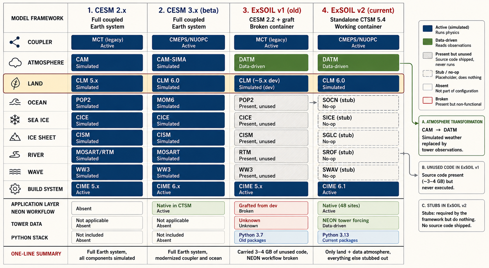
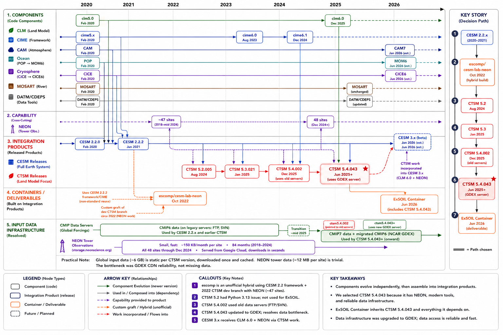

Three products are in play, each nesting inside the next. CESM (Community Earth System Model) is the full coupled Earth system: atmosphere (CAM), ocean (POP/MOM6), sea ice (CICE), ice sheets (CISM), waves (WW3), and land (CLM), all exchanging energy and moisture through a coupler. It is designed for global climate projections. CTSM (Community Terrestrial Systems Model) is a self-contained release of just the land portion. It includes CLM (the land simulation code), CIME (the build and case management system), DATM (a data atmosphere that reads weather from files instead of simulating it), a coupler (CMEPS), and the NEON tower workflow (48 pre-configured site setups). CIME and CLM share common ancestry with CESM (they are developed in the same repositories), but CTSM is packaged and released independently by NCAR as its own product. It is what NCAR recommends for single-site land experiments.
The original ExSOIL container
(escomp/cesm-lab-neon, October 2022) was not built on
CTSM. It was built on the full CESM 2.2 framework and carried the
complete source code for the atmosphere, ocean, sea ice, ice sheet,
and wave models (~3-4 GB) even though none of them were used. The
NEON tower workflow did not exist in any CESM 2.x release, so it was
grafted in from a development branch of CTSM that predated any
official release. That graft broke as the components diverged. The
container ran on CentOS 8 (end-of-life), Python 3.7 (end-of-life),
and only supported Intel/AMD processors. This report covers the
rebuild, which replaces the CESM base with standalone CTSM 5.4.
How the components relate
The diagrams below show how these three products relate across release versions and time.


Why standalone CTSM instead of full CESM?
CESM is the full Earth system model (atmosphere, ocean, ice, land). We only need the land component. NEON tower support was developed exclusively for standalone CTSM starting in 2021 and was never part of any CESM 2.x release. The previous container used an undocumented custom build that grafted NEON support from a development branch; that graft broke as the components diverged. Moving to standalone CTSM 5.4 aligns with NCAR's recommendation, removes 3-4 GB of unused source code, and eliminates the need for several workarounds.
The migration from CESM 2.2.2 to standalone CTSM 5.4.043 resolved most of the original build compatibility issues. A handful of fixes remain in the container machine config for arm64 compilation and conda-forge library compatibility.
▶Compatibility fixes (details)
| Issue | Root cause | Fix |
|---|---|---|
| x86 asm error in GPTL | rdtsc instruction (arm64 incompatible) | Removed HAVE_NANOTIME flag |
| MPI type mismatch | GCC 10+ strict checking | -fallow-argument-mismatch |
| BOZ hex literal error | GCC 10+ strict BOZ checking | -fallow-invalid-boz |
| _FillValue renamed | NetCDF-C renamed macro | -D_FillValue=NC_FillValue |
| MPILIB conflict | Conda MPICH conflicts with CIME serial stubs | Patched NEON usermods |
Issues resolved by the CTSM migration (no longer apply): PIO2 source patches, Python 3.12 pin, cmake <4 pin, bundled six.py conflicts, import imp deprecation.
End-to-end simulation
The full pipeline has been validated with a 1-day transient simulation at the KONZ (Konza Prairie, Kansas) NEON site. Every step from case creation through archived output completes successfully.
Simulation pipeline
- Pre-download global input data (~6 GB, 31 files with retries)
- Create case via
run_tower --neon-sites KONZ --run-type transient - Build the Fortran model from source (~100 seconds)
- Download NEON tower forcing (84 monthly files from Google Cloud)
- Run the model via
case.submit(CIME manages execution) - Archive output (history files, restart files, logs)
- Analyze with Python (xarray reads CLM output directly)
Output: 31 CLM variables across 48 half-hourly time steps, including soil temperature (TSOI), soil moisture (H2OSOI), and sensible heat flux (FSH). These are the variables needed for model-observation comparison at NEON sites.
Input data profile
| Category | Size | Changes? | Speed |
|---|---|---|---|
| Global input data | ~6 GB | Static per CTSM version | Slow (GDEX CDN unreliable) |
| NEON site surface data | ~56 KB per site | Static per CTSM version | Fast |
| NEON tower forcing | ~150 KB/month per site | New months added over time | Fast (Google Cloud) |
| NEON terrestrial observations | Varies by data product | Updated as NEON publishes | Available; fetch/comparison code exists but not yet validated |
Calibration and validation
CLM ships with default parameter values (soil thermal conductivity, hydraulic conductivity, root depth distribution, stomatal conductance, and hundreds more) that are tuned to global averages. The soil at Konza Prairie is not the same as the soil at a NEON site in Alaska or Florida. The core research question is whether those defaults are adequate for a given site, and if not, which parameters need adjustment.
This is where the Kalman filter calibration comes in. It takes the mismatch between CLM's predictions and the NEON terrestrial observations and works backward: if the model consistently predicts soil temperature 2 degrees too warm, which parameter adjustments (within physically plausible bounds) would bring the prediction closer to what the sensors measured? The output is a set of site-specific parameter values that make CLM better match that particular location. The scientific value is twofold: better predictions at that site, and insight into what CLM gets systematically wrong (if thermal conductivity always needs adjustment at grassland sites, that points to a structural issue in how CLM represents grassland soils).
An open question is what the actual workflow target is. There are two distinct goals, and they require different levels of validation:
- Diagnostic comparison: Run CLM with default parameters, compare output against NEON observations, and assess where the model is right and where it falls short. This is useful on its own for understanding model behavior, but it treats CLM as a fixed object being evaluated.
- Kalman filter calibration: Use the model-observation
mismatch to iteratively adjust CLM's parameters, producing a
calibrated model tuned to a specific site. This is the more
ambitious goal and the one the
analytics_moduleswere built for. If this is the primary use case, the diagnostic comparison is a means to an end (quantifying the misfit that drives calibration), not an end in itself.
We need to confirm with Jingyi which of these is the target before investing in notebook validation. If the goal is calibration, the diagnostic visualizations are intermediate outputs in that pipeline rather than standalone deliverables.
Model-observation comparison
Regardless of the end goal, the comparison between CLM output and NEON observations is the foundation. "Evaluating" means comparing CLM's predictions (soil temperature, soil moisture, carbon fluxes, heat fluxes) against the actual measurements recorded by NEON sensors at the same site, over the same time period. The model says soil temperature at 10 cm was 12.3 degrees on January 15; the NEON sensor at 10 cm recorded 11.8 degrees. That comparison, repeated across variables, depths, and time, quantifies where the model is accurate and where it diverges.
The comparison uses standard diagnostic visualizations (time series, seasonal cycles, depth profiles, scatter plots, Taylor diagrams) that each answer a different question about model performance.
▶Diagnostic visualizations (details)
| Diagnostic | What it shows | What failures look like |
|---|---|---|
| Time series | CLM's predicted value plotted alongside the NEON sensor measurement over the same time period. The most intuitive view. | Model diverges during specific seasons or events (e.g., always too warm in July, misses freeze events). |
| Diurnal cycle | Half-hourly data averaged by time of day. Does CLM capture the daily heating/cooling pattern? | Amplitude wrong (too hot at midday, too cold at night) or timing shifted (peak an hour late). |
| Seasonal cycle | Monthly means over the simulation period. Captures freeze/thaw timing, growing season onset, summer drought stress. | Spring thaw too early, growing season too long, winter temperatures biased. |
| Depth profiles | Soil temperature or moisture as a function of depth, model layers vs sensor depths. | Surface close but deeper layers diverge. Common when soil thermal properties are miscalibrated. |
| Scatter plots | Model vs observation with a 1:1 line. Gives correlation (R2), bias, and RMSE in a single view. | Systematic offset from the 1:1 line (consistent bias). Wide scatter (poor correlation). |
| Taylor diagrams | Polar plot showing correlation, standard deviation ratio, and centered RMS difference for multiple variables simultaneously. | Dots far from the reference point. Lets you compare performance across variables at a glance. |
| Residual analysis | Model minus observed over time. Reveals systematic patterns vs random error. | "Always 2 degrees too warm in summer" is a systematic bias. Random scatter around zero means unbiased. |
When the model disagrees with observations, the natural question is whether the disagreement is meaningful or within the range of uncertainty. Both sides of the comparison carry uncertainty: the observations have sensor precision and representativeness limitations, and the model has parameters that could plausibly take a range of values. Understanding the uncertainty envelope around both the predictions and the measurements is what separates "the model is wrong" from "the model is within the range of what we'd expect given what we don't know." This matters for the calibration step: you only want to adjust model parameters to fix real biases, not to overfit to noise in the observations.
▶Uncertainty quantification (details)
Observation uncertainty
NEON sensor measurements have their own uncertainty. Temperature sensors have instrument precision (~0.1 degrees C), but the bigger issue is representativeness: a sensor at one spot in a prairie may not represent the grid cell CLM is simulating. NEON publishes quality flags and uncertainty estimates with their data products, particularly for the eddy covariance flux measurements (which have well-documented random and systematic error budgets).
Parameter uncertainty
CLM has hundreds of parameters (soil thermal conductivity, root
distribution, stomatal conductance coefficients). Each has a physically
plausible range. The Kalman filter calibration in
analytics_modules is designed to explore this: it adjusts
parameters within their physical bounds and quantifies how much the
prediction changes. The posterior parameter distribution gives a measure
of parametric uncertainty.
Ensemble perturbation
Run CLM multiple times with perturbed parameters or perturbed forcing data. The spread of the ensemble is the uncertainty band. This is what the Design_Hub_v2 notebook's perturbation experiments are for: vary inputs systematically and compare the resulting output distributions.
Structural uncertainty
CLM makes simplifying assumptions (number of soil layers, how roots take up water, biogeochemistry parameterizations). Quantifying this requires comparing CLM against a different land model entirely, which is outside the scope of ExSOIL.
Current status
| Capability | Tool | Status |
|---|---|---|
| Run CLM, produce output | CTSM + NEON workflow | Working |
| Read output with Python | xarray | Working |
| Fetch NEON observations for comparison | download_eval_files | Not yet validated |
| Time series / scatter / profile diagnostics | Modeling_Hub notebook | Needs validation |
| Kalman filter calibration | analytics_modules | Needs validation |
| Perturbation experiments | Design_Hub_v2 notebook | Needs validation |
The infrastructure to run simulations and read output is in place. The next milestone is connecting the observation data and validating the diagnostic notebooks against real output from this container.
Known issues and concerns
Data hosting reliability
NCAR's new GDEX data server (osdf-data.gdex.ucar.edu) uses a 3-hop
redirect chain that intermittently returns empty responses or times out. Our
pre-download script works around this with 5 retries per file and fallback to
SVN and FTP servers. This achieves 100% success across 31 files, but initial
data setup still takes 10-15 minutes and any single download can stall for
up to 5 minutes before a retry kicks in. The underlying reliability problem
is on NCAR's infrastructure; we have no control over it.
Mitigation options: Cache the ~6 GB of global input data on university S3 (eliminates NCAR dependency entirely), or bundle it in the container image (increases image size from ~7 GB to ~13 GB but removes the download step).
Development tag, not an official release
We are running CTSM 5.4.043, which is a development tag on CTSM's main branch, not an official release. The most recent official release (ctsm5.4.002, December 2025) shipped before NCAR updated its data server configuration files, so it points at old servers where the data no longer exists. The 5.4.043 tag was the earliest tag that uses the new GDEX server correctly.
This means we are tracking a moving target. If NCAR publishes a breaking change on main, our tag will not be affected (tags are immutable), but any future upgrade will need careful testing. When NCAR publishes a 5.4.x release with working data server config, we should pin to that instead.
NEON tower data temporal coverage
NEON tower forcing data is available through approximately September 2024
for most sites (84 monthly files from January 2018). The last three months
of 2024 (October, November, December) are not yet available on NEON's data
portal. The NEON usermods default to DATM_YR_END=2022 for
transient runs, so this is not a blocker for most simulations, but researchers
who want to run through 2024 will see missing-file warnings for those months.
MPI workaround, not an upstream fix
The NEON workflow defaults to MPILIB=mpi-serial (CIME's
built-in serial MPI stub). In a conda-forge environment, the real MPICH
shared libraries are always on the linker path, and the two conflict at
runtime. Our fix patches the NEON usermods in the Dockerfile to remove the
mpi-serial override so cases use real MPICH. This is a
container-level workaround, not a fix in the CTSM source. Any CTSM
upgrade will need the same patch reapplied.
amd64 not tested end-to-end
All local testing (90-test suite, case.build, simulation run) was on native arm64 (Apple Silicon). The amd64 path builds successfully in CI and the lockfiles exist, but the full test suite and simulation have not been exercised on amd64 hardware. The architecture-selection logic in the Dockerfile and lockfiles is straightforward, so failures are unlikely, but this is an untested path.
Science notebooks not validated with simulation output
The Modeling_Hub, Design_Hub_v2, and Data_Hub notebooks are present in the container but have not been tested against real CLM output from this container. They were developed against output from the previous container (CESM 2.x, different variable naming conventions). The Getting_Started notebook has been validated.
No upstream issue filed
We have not yet reported the data server mismatch or the
mpi-serial/conda-forge conflict to ESCOMP/CTSM on GitHub.
A draft issue exists at docs/ctsm-issue-draft.md but has
not been submitted. Understanding whether these are known issues or novel
findings would help determine whether our workarounds are temporary or
long-term.
Open questions
For Jingyi (research use cases)
- Which NEON sites are needed? We support all 48, but validation effort should focus on priority sites.
- What simulation periods? The 1-day KONZ run works; are months, years, or specific date ranges needed?
- Which output variables matter most? We produce 31 CLM variables; the analysis may only need a subset.
- What does the current model-observation comparison workflow look like? Does it match the diagnostic patterns we described (time series, depth profiles, Taylor diagrams), or are there different approaches?
For the team (infrastructure decisions)
- Delivery model: Is a distributable Docker container sufficient (researchers pull and run locally), or do we want to host a shared instance (e.g., JupyterHub on campus infrastructure or cloud)? A hosted option eliminates the ~6 GB data download and local Docker requirement, but adds hosting cost and maintenance. A container-only approach is simpler but puts setup burden on each user.
- Do we cache global input data on campus S3, or bundle it in the container image (~7 GB to ~13 GB)?
- Do we file an upstream issue with ESCOMP/CTSM about the data server mismatch and mpi-serial conflict, or wait until we better understand whether these are known issues?
- When do we open the PR to merge to main and publish the image?
- Do we need amd64 validation before merging, or is arm64-only sufficient for now?
For NCAR / upstream (unresolved externalities)
- When will a stable CTSM 5.4.x release ship with working GDEX server config so we can move off the dev tag?
- Is the GDEX CDN reliability being addressed, or is this the new normal?
- Are the last 3 months of 2024 NEON tower data (Oct-Dec) going to be published?
Next steps
- Review use cases with Jingyi. Confirm which NEON sites, simulation periods, output variables, and analysis patterns are needed so subsequent work is guided by actual research requirements.
- Multi-day and multi-site validation. Extend the 1-day KONZ run to longer periods and additional NEON sites (prioritize based on Jingyi's input).
- Science notebook validation. Connect Modeling_Hub to simulation output for model-data comparison. Integrate NEON terrestrial observations via
download_eval_files. Validate the Kalman filter calibration and perturbation experiment workflows. - Data caching. Cache global input data on university S3 or bundle it in the container to eliminate the download bottleneck.
- CI/CD test integration. Wire the 90-test suite into GitHub Actions for both architectures.
- Pin to a stable CTSM release. When NCAR publishes a 5.4.x release with working GDEX config, upgrade from the dev tag.
- File upstream issue. Report the data server and mpi-serial findings to ESCOMP/CTSM.
- PR and merge. Open pull request from the feature branch and publish the updated image.
Testing strategy
| Tier | Tests | Runtime | What it validates |
|---|---|---|---|
| 0 | 63 | ~4s | Python imports, compiler presence, Fortran+MPI compilation, CTSM install integrity |
| 1 | 13 | ~3s | Case creation, case.setup, xmlchange/xmlquery, NEON site listing |
| 2 | 14 | ~100s | Full case.build, NetCDF I/O, cartopy rendering, Dask chunked I/O |
Result: 90/90 pass on native arm64.
Component definitions
The container packages a land surface modeling framework and a Python analysis stack into a single Docker image. Most of the modeling components (CTSM, CLM, CIME, DATM, the NEON workflow) are stock NCAR software that any researcher would use. What ExSOIL adds: the multi-architecture container build, the conda-forge compilation environment, the pre-download script for unreliable NCAR servers, and the project-specific analysis notebooks and modules.
| Component | What it does | Used in | Status |
|---|---|---|---|
| CTSM 5.4 | Community Terrestrial Systems Model. The standalone land modeling framework from NCAR. Assembles CLM, CIME, and the NEON workflow into a single release. | CTSM, ExSOIL v1, ExSOIL v2 | Working |
| CLM 6.0 | Community Land Model. The Fortran code that simulates soil temperature, moisture, carbon cycling, vegetation, and hydrology. This is the model that produces the scientific output. | CESM 2.x, CESM 3.x, CTSM, ExSOIL v1, ExSOIL v2 | Working |
| CIME 6.1 | Common Infrastructure for Modeling the Earth. The build and case management system: create_newcase, case.setup, case.build, case.submit. Handles compilation, data staging, and output archiving. | CESM 2.x, CESM 3.x, CTSM, ExSOIL v1, ExSOIL v2 | Working |
| CAM | Community Atmosphere Model. Simulates weather by solving atmospheric physics equations. Fills the "atmosphere input" slot in full CESM runs. | CESM 2.x, CESM 3.x | Not in ExSOIL |
| DATM | Data atmosphere. Fills the same "atmosphere input" slot as CAM, but reads observed weather from files instead of simulating it. CLM doesn't know or care which one is connected; it receives the same variables through the same coupler interface either way. | CTSM, ExSOIL v1, ExSOIL v2 | Working |
| NEON site surface data | A static description of the physical land at each tower location: soil type, soil layer depths, vegetation cover (grass, forest, crop), terrain elevation, drainage. One file per site (~56 KB). Sets the stage: "here is what the ground looks like at Konza Prairie." Does not change over time. | CTSM, ExSOIL v1, ExSOIL v2 | Available |
| NEON tower forcing | The weather above that ground, measured continuously by the tower instruments: temperature, humidity, wind, radiation, precipitation, every 30 minutes. Drives the simulation forward through time. Each monthly file (~150 KB) contains ~1,440 half-hourly records. Published by NEON (Google Cloud), not NCAR. | CTSM, ExSOIL v1, ExSOIL v2 | Available |
| NEON terrestrial observations | What the instruments measure in and on the ground: soil temperature at multiple depths, soil moisture at multiple depths, soil CO2 concentration, eddy covariance flux measurements (net carbon exchange, latent heat, sensible heat), vegetation structure (leaf area, canopy height), plant phenology, litter and root biomass, nutrient cycling. This is the ground truth that model predictions get compared against. CTSM includes a download_eval_files function to fetch processed observation products, and the Modeling_Hub notebook has code paths for model-observation comparison. The plumbing exists; it has not been tested in this container. | ExSOIL v1, ExSOIL v2 | Not yet validated |
| NEON tower workflow | Combines site surface data and tower forcing: downloads both for a given site, creates a simulation case, and wires DATM to read the tower observations. Single command: run_tower --neon-sites KONZ. | CTSM 5.2+, ExSOIL v2. Grafted/broken in v1. Coming in CESM 3.x. | Working |
| POP2 / MOM6 | Ocean models. POP2 in CESM 2.x, MOM6 in CESM 3.x. Not needed for land-only simulations. | CESM 2.x, CESM 3.x | Not in ExSOIL |
| CICE / CISM / WW3 | Sea ice, ice sheet, and wave models. Not needed for land-only simulations. | CESM 2.x, CESM 3.x | Not in ExSOIL |
| MPICH | Message Passing Interface library. Manages parallel execution. In the container, simulations run on a single core via mpiexec -n 1. | CESM 2.x, CESM 3.x, CTSM, ExSOIL v1, ExSOIL v2 | Working |
| Python stack | xarray, cartopy, matplotlib, scipy, pandas, bokeh, panel, JupyterLab. For reading CLM output, plotting, diagnostics, and interactive notebooks. | ExSOIL v1, ExSOIL v2 | Working |
| Pre-download script | Downloads ~6 GB of global input data from NCAR servers with retries and fallback across GDEX, SVN, and FTP. | ExSOIL v2 only | Working |
| analytics_modules | Project-specific: Kalman filter calibration, model misfit diagnostics, S3 data access. | ExSOIL v1, ExSOIL v2 | Needs validation |
| Modeling_Hub notebook | Model-data evaluation and Kalman filter calibration. | ExSOIL v1, ExSOIL v2 | Needs validation |
| Design_Hub_v2 notebook | CLM forcing perturbation experiments, scenario comparison. | ExSOIL v2 only | Needs validation |